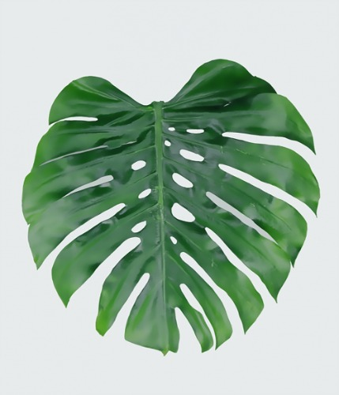
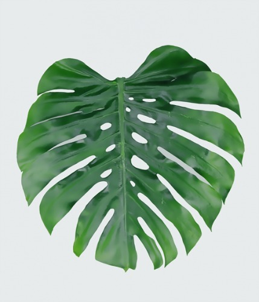

오늘은 세싹 강의를 들었다. 20분 지각했다.
날씨가 맑다.
Sunsation
초장: 30~50 cm 초폭 30~40 cm
줄기가 강하고 꽃수명이 길어 조경용 및 분화용으로 적당하며 엽색이 진해 상품성이 우수한 품종.
Smiley
초장: 30~50 cm 초폭 30~ 40 cm
분지성이 좋고 콤펙트한 왜성종으로 기존 품종에 비하여 연속 개화성이 개선된 품종
SunBuzz
초장: 30~50 cm 초폭 30~ 40 cm
기존 품종에 비하여 일장에 둔감하여 재배 일수를 단축할 수 있으며 잎이 좋아 소품 분화용 등으로 용이한 품종

 
네이버로 이동

네이버로 이동